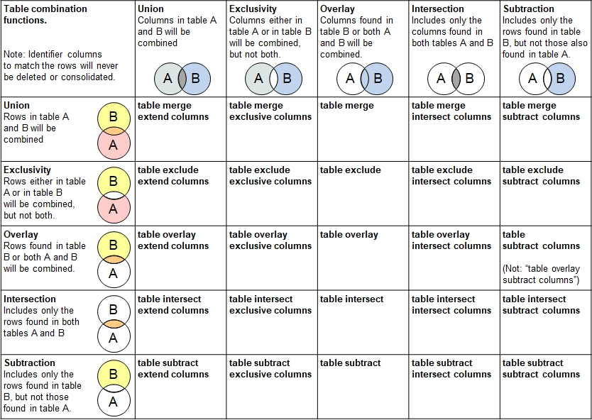

Introduction
The functions described next cover the art of combining two (or more) tables using the fine arts of relational algebra
where different algebraic rules can be applied to rows and columns.
In a simple example, two tables with members of two clubs (e.g. tennis and squash) need to be merged into one where the last and first names of the
members shall act as matching identifiers. In case no person has a membership in both clubs, no overlap applies, and the list will simply be
appended where the data are aligned to the right columns, using header names as orientation. The columns in both tables do not need to be aligned
before the merger. If one or more persons possess memberships in both clubs, then the information will be consolidated where the same
consolidation actions rules are available as used by table consolidate. As an example, the account receivable (e.g.
indoor court reservation fees to be balanced) can be added up whereas the preferences at the club bar can be consolidated with append once
so the preference for tonic water at one club and beer at the other club will appended into "tonic water, beer".
If no identifier columns are defined in the functions described next, then every row will be considered unique. Merging the table is treated appending two tables,
with aligning the data into the right columns.
The following table summarizes the 25 functions in a 5 x 5 matrix with specifc rules to be applied on rows as wll as columns.
The table contains illustrations on how the rows are combined (shades of red / orange / yellow) and how columns are combined (shades of
gray and light blue). The syntax of the function name does first describe the operation on the rows (e.g. table merge) followed by
the operation on the columns (e.g. table merge extend columns()). If no extension like ... extend columns is specified, then
no additional columns are added in the target table and the data in the source table not fitting in the target table structure will not be taken over.

The term exclusivity is also known as symmetric difference and disjunctive union.
Additional Functions
Following table operations are also described in this section:
- Multiplying tables
- Dividing tables (binary division in relational algebra)
- Arranging tables sideways.